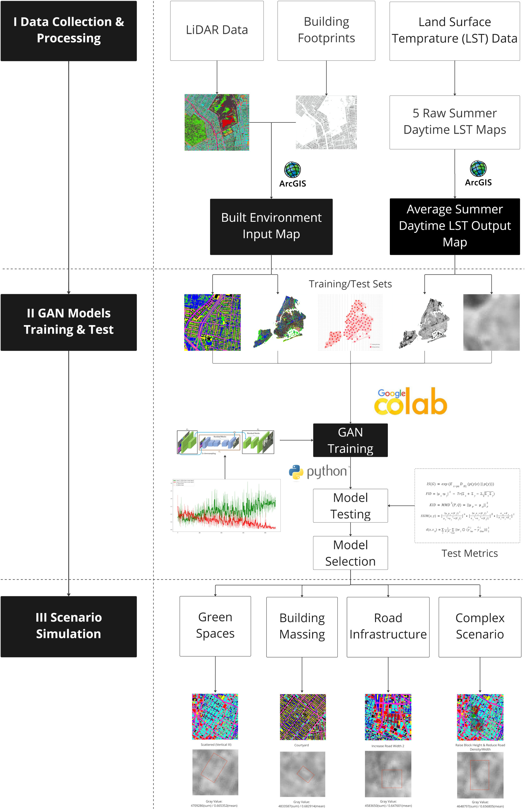
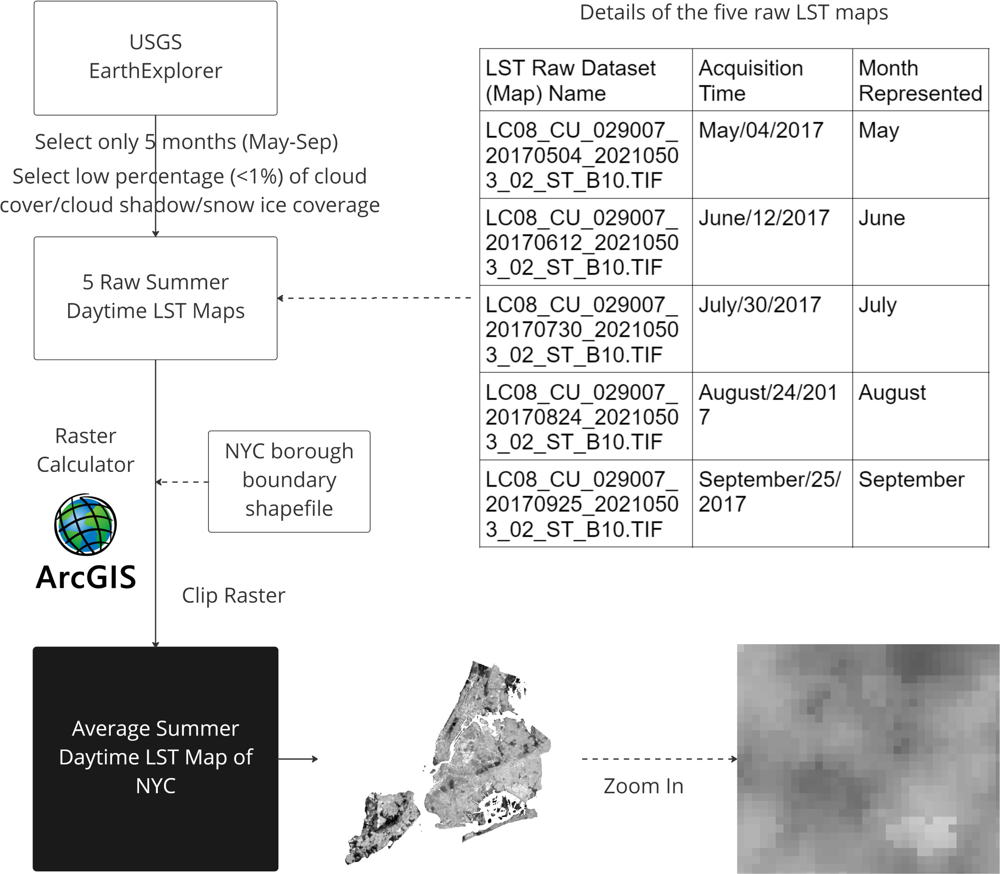
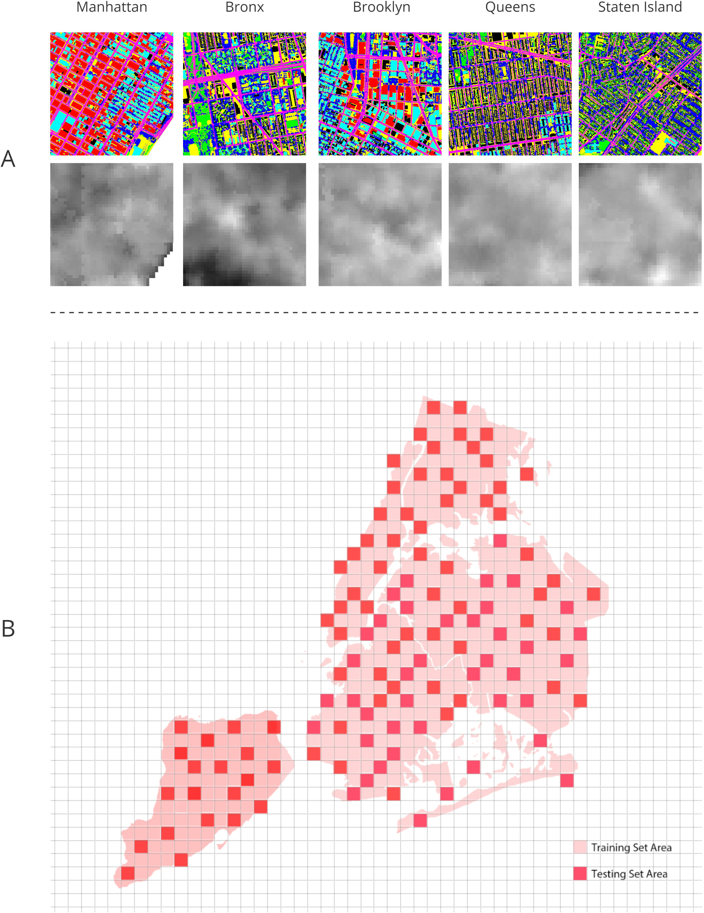
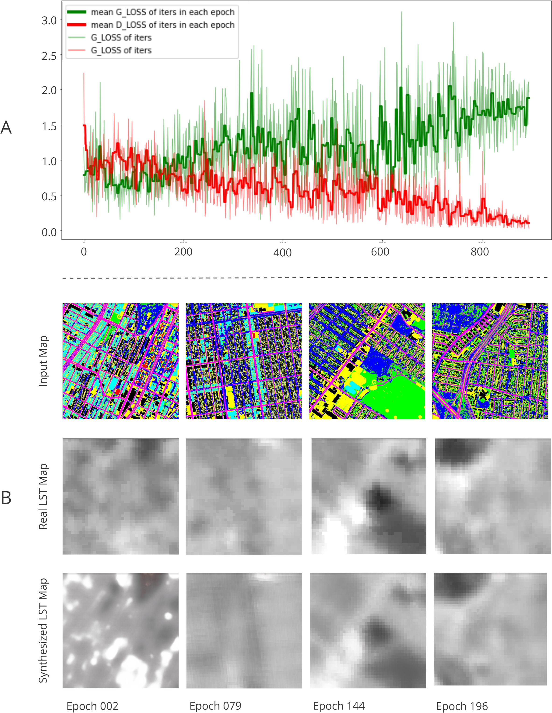
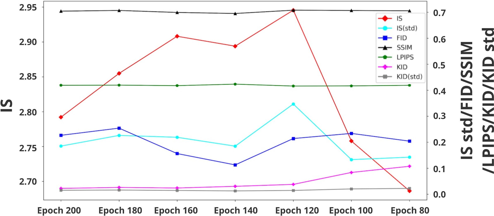
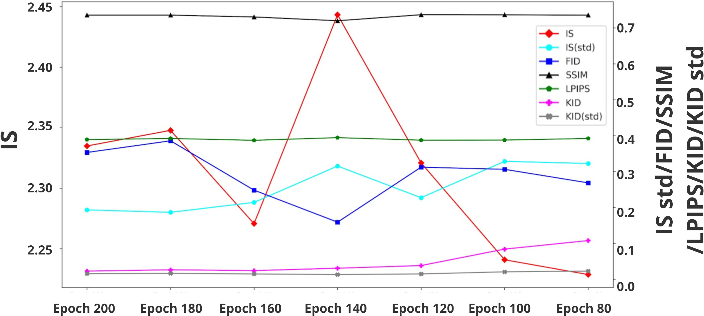

[Prediction of summer daytime land surface temperature in urban environments based on machine learning.]
Key Words: Land surface temperature; Urban form; Generative adversarial networks
This post might come from a pre-copy-editing or a post-print author produced file of an article accepted for publication. For the efinitive publisher-authenticated version, please refer to the full article link.
Highlights
In the context of global warming and extreme heat phenomenon, this study provides a tool for future professionals in designing sustainable city forms.
Background
Land Surface Temperature (LST) is an important indicator of urban heat environments and can be largely influenced by the morphology factors of cities. However, previous studies mainly focus on large-scale and coarse-grained forecast modeling, making it hard to inform architects and urban designers without the advantage of quick, fine-grained prediction and visualization.
Methodology
The paper uses Generative Adversarial Networks (GAN) to address this gap by proposing a prediction model of city plans (Fig.1 - A) and corresponding LST heat maps (Fig.1 - B). The research framework is as Fig.2.

Data
Taking New York City as an example, we use the Light Detection and Ranging (LiDAR) data, Landsat Surface Temperature data, and other relevant data to construct the built environmental dataset (Fig.3) and the LST dataset (Fig.4).

GAN Training
The GAN architecture is as Fig.5. We use the data to build seven hundred image pairs as training/test sets (Fig.6) to train/test the model of predicting LST distribution. As the training continues, it can be obersved that the accuracy of our model gradually increases (Fig.7).


Accuracy Analysis
We utilize both qualitative and quantitative methods to test our models. For qualitative methods (Fig.8), we visually compare the prediction results of both training and test sets. For quantitative measures (Fig.9-10), we use five metrics to evaluate each model and find epoch 140 performs the best. Eventually, we select epoch 140 as our final model which can generate LST maps relatively quickly and accurately with the input of city plans.


AI-aided city design
After model selection, different scenarios are simulated to test the application of the model in predicting the environmental impacts of plan modifications on land surface temperature. Scenarios include green space, building massing, road infrastructure and complex scenario.
Green space scenarios
Q1: To lower LST levels, Where to add green spaces with a fixed greening growth rate and specific design composition? (Fig.11- a & d)
A1: For these two samples, adopting a layout strategy of vertically
scattering or concentrating may help lower LST levels.
Q2: With fixed location/layout and specific design composition, what is a suitable growth rate of urban greening in light of LST? (Fig.11- b & e)
A2: For these two samples, a growth rate of 1% is suitable for urban greening that may help reduce LST.
Q3: With fixed location/layout and growth rate of greening, how to optimize the design composition to achieve a better LST performance? (Fig.11- c & f)
A3: For these two samples, setting grassland:tree canopy=2:8 can aid in lowering LST levels.

Building Massing scenarios
Q1: In consideration of LST levels, how to optimize the planar arrangement of building blocks with a fixed coverage ratio and height limit? (Fig.12- a & d)
A1: For these two samples, a chessboard-like or mixed block form might be effective in minimizing LST impacts.
Q2: With a settled height limit and planar form, what is a suitable building coverage ratio to reduce the impacts of the future intervention on LST? (Fig.12- b & e)
A2: For these two samples, a BCR of 0.6 can help minimize the influences on LST.
Q3: How to set the optimal height control of different buildings for a better LST performance with specified coverage and planar form? (Fig.12- c & f; Fig.13- a & d)
A3: For these two samples, arranging high volumes on a certain side of the sites may help reduce LST levels or impacts.

Road Infrastructure scenarios
Q1: Considering the impacts on LST, how to increase/reduce road width while maintaining the original grid density? (Fig.13- b & e)
A1: For these two samples, reducing road width may aid in lowering LST.
Q2: How to rearrange road grids to lower the impacts of the new plan on local LST levels? (Fig.13- c & f)
A2: For these two samples, both increasing and reducing grid density can help optimize LST impacts.

A complex scenario
It can be observed from Fig.14 that through adding scattered or centralized green spaces, changing compact blocks to loosely arranged ones with courtyards, raising the height of certain building groups, and reducing road width/density of certain areas, partial LST levels can decrease significantly by around 3.7% to 6.6% while the overall LST level may drop by about 2.5%.
Conclusion
In the context of global warming and extreme heat phenomenon, this study provides a tool for future professionals in designing sustainable city forms. Through our experiment, we have constructed and testified a GAN model connecting built environment features to the summer daytime land surface temperature in short periods.
The cooling effect on LST can be brought by scattered or concentrated urban green spaces, loosely-arranged building forms, less building coverage ratio, and fewer road surface exposures.
Limitations & Future Works
1. The main aim of this study is not to summarize universal guidance on designing the environment to lower LST but to present
an AI-based, interactive methodology in LST prediction and design optimization. Therefore, the LST reduction methods concluded
from scenario simulation cannot be generalized at this time.
2. Various non-design factors such as solar radiation, cloud cover, wind, and humidity can influence LST from the perspective of
climate science. Considering the research aim, including these factors may cause the model less intuitive for designers to use. But
future studies could compare or connect this paper to other research that utilizes climate-based metrics as explanatory factors of LST.
3. At the same time, as the goal of our study is not to develop a faultless GAN model that can perform better than other state-of-the-art models but
to showcase the application of GAN in predicting LST and link the application to the field of architectural and urban design practices, we did not
include any other models for comparison.
4. Moreover, the research did not include any comprehensive model-tuning process, cross-validation, or random initialization to refine the model to
perfection. However, based on the work showcasing the power of generative AI in informing designers done by this paper, future research needs to
pay attention to improving the accuracy of relevant models through comprehensive evaluation and optimization.
5. In addition, due to the limitation of data availability, the study did not highlight the longitudinal or even real-time features of LST datasets.
We have tried our best to gather high-quality LST data with little cloud cover that can be utilized to serve our research aim but could only acquire
five maps at discrete time stamps to represent summer months.
6. For future studies around LST and built environment, apart from continuing to explore the scope provided by this paper, training machine learning
algorithms in multi-dimensions may help draw conclusions on how urban morphology relates to LST. However, despite the drawbacks above, the general
methodology has potential universality since this study essentially focuses on fitting GAN models to connect human-constructed environmental features
with naturally observed data on a fine scale.